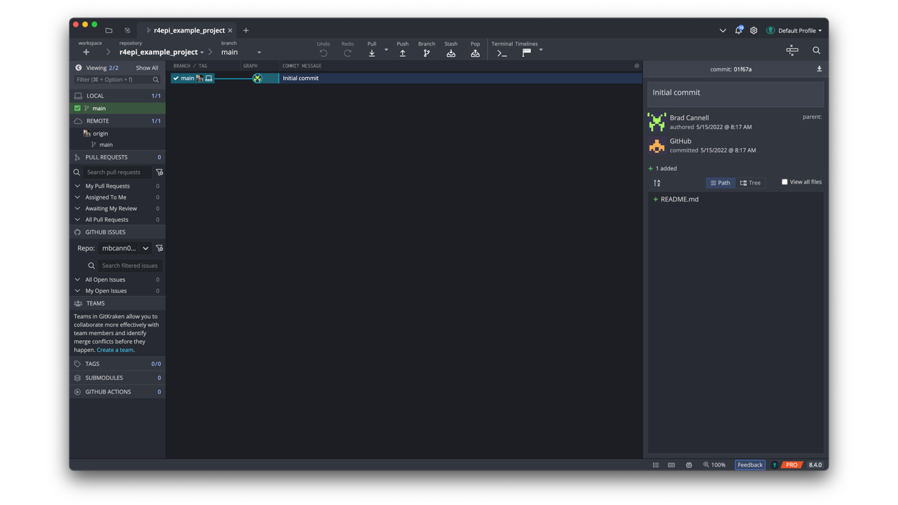

39 Using git and GitHub

In the previous chapter, we discussed why we should consider learning to use git and GitHub as part of our workflow when our projects include data and/or coding. In this chapter, we will begin to talk about how to use git and GitHub. We will also introduce a third tool, GitKraken, that makes it easier for us to use git and GitHub.
39.1 Install git
Before we can use git, we will need to install it on our computer. The following chapter of Pro Git provides instructions for installing git on Linux, Windows, and MacOS operating systems: https://git-scm.com/book/en/v2/Getting-Started-Installing-Git.
If you are using a Mac, it’s likely that you already have git — most Macs ship with git installed. To check, open your Terminal app. The Terminal app is located in the Utilities folder, which is located in the Applications folder. In the terminal app, type “git version”. If you see a version number, then it is already installed. If not, then please follow the installation instructions given in the link to Pro Git above.

Figure 39.1: Checking git version in the MacOS terminal.
39.2 Sign up for a GitHub account
We have already alluded to the fact that git and GitHub are not the same thing. You can use git locally on your computer without ever using GitHub. Conversely, you can browse GitHub, and even do some limited contributing to code, without ever installing git on your computer (e.g., see Contributing to R4Epi)). However, git and GitHub work best when used together. You don’t need to download anything to start using GitHub, but you will need to sign up for a free GitHub account. To do so, just navigate to https://github.com/

39.3 Install GitKraken
Git is software for our computer. It’s an application just like RStudio, Microsoft Word, or your favorite calendar app. However, unlike those apps, git does not have a graphical user interface (GUI - pronounced “gooey”). In other words, there is no git application that we can open and start clicking around in. Instead, by default, we interact with git by typing commands into the computer’s terminal – also called “command line” in GitHub’s documentation – like we saw in 39.1. The commands we type to use git kind of look like their own programming language. In our experience, interacting with git in the terminal is awkward, inefficient, and unnecessary for most new git users. And learning to use git in this way is a barrier to getting started in the first place. 😩
Thankfully, other third-party vendors have made excellent GUI’s for git that we can download and use for free. Our current favorite is called GitKraken. To use GitKraken, you will first need to navigate to the GitKraken website (https://www.gitkraken.com/).
Before you use the GitKraken client, you will need to sign up for an account. It may say that you need to sign up for a free trial. Go ahead and do it. The free trial is just for the “Pro” version. At the end of the free trial, you will automatically be downgraded to the “Free” version, which is… free. And, the free version will do everything you need to do to follow along with this book.

Next, you will need to click on the “Try Free” button. Then, download and install the GitKraken Client to your computer.

As you are installing GitKraken, it should ask you if you want to sign up with your GitHub account. Yes, you do! It will make your life much easier down the road. If you didn’t sign up for a GitHub account in the previous step, please go back and do so.

Then click the green Continue authorization button.

Then, you will be asked to sign in to your GitHub account – possibly using your two-factor authentication. When you see the success screen, you can close your browser and return to GitKraken.

The next thing you will do is create a profile. After you create a profile, you will be asked if you want the Repo Tab first or the Terminal Tab first. We recommend that you select the Repo Tab option.

Once you have installed Git and GitKraken, and you’ve created your GitHub account, you will have all the tools you need to follow along with all of the examples in this book. Speaking of examples, let’s go ahead and take a look at a couple now.
39.4 Example 1: Contribute to R4Epi
If you haven’t already done so, please read the contributing to R4Epi portion of the book’s welcome page). This will give you a gentle introduction to using GitHub, for a very practical purpose, without even needing to use git or GitKraken.
39.5 Example 2: Create a repository for a research project
In this example, we will learn how to create our very own git and GitHub repositories from scratch. We can immediately begin using the lessons from this example for our research projects – even if we aren’t collaborating with others on them. Remember, there are at least four overarching reasons why you should consider learning to use git and GitHub as part of your workflow for your projects, and collaboration is only one of them. Not to mention the fact that it is often useful to think of our future selves as other collaborators, which we have mentioned and/or alluded to many times in this book.
There are many possible ways we could set up our project to take advantage of all that git and GitHub have to offer. We’re going to show you one possible sequence of steps in this example, but you may decide that you prefer a different sequence as you get more experience, and that’s totally fine!
This example is long! So, we created a brief outline that you can quickly reference in the future. Details are below.
Step 1: Create a repository on GitHub
Step 2: Clone the repository
Step 1: Create a repository on GitHub
The first thing we will do is create a repository on GitHub. Repositories are the fundamental organizational units of your GitHub account. Other cloud storage services like Dropbox are organized into file folders at every level. Meaning, you have your main Dropbox folder, which has other folders nested inside of it – many of which may have their own nested folders. Your GitHub account also stores all your files in file folders; however, the level one folders — those that aren’t nested inside of another folder — are called repositories (represented by the book icon in the image below and on the GitHub website). Typically, each repository is an entire, self-contained project. Like a file folder, each repository can contain other folders, code files, media files, data sets, and any other type of file needed to reproduce your research project.

Figure 39.2: GitHub repositories compared to Dropbox.
⚠️Warning: Just because we can upload data to GitHub doesn’t mean we should upload data to GitHub. Often, the data we use in epidemiology contains protected health information (PHI) that we must go to great lengths to keep secure. In general, GitHub is NOT considered a secure place to store our data, and should not be used for this purpose. Below, we will demonstrate how to make sure our data isn’t uploaded to GitHub with the rest of the files in our repository.
To create a new repository in GitHub, we will simply click the green create new repository button. This button will look slightly different depending on where we are at in the GitHub website. In screenshot below, which was taken from Brad’s main landing page (i.e., https://github.com/), the green button appears on the left sidebar. It contains the repository book icon and the word “new.”

After clicking the green create new repository button, the next page we will see is the setup page for our repository. For the purposes of this example, we will use the following information to set it up.
Repository name: As the on-screen prompt says, great repository names are short and memorable. Further, the repository name must be unique to our account (i.e., we can’t have two repositories with the same name), and it can only include letters, numbers, dashes (
-), underscores (_), and periods (.). We recommend using underscores to separate words to be consistent with the object naming guidelines from [coding-best-practices]. For this example, we will name the repositoryr4epi_example_project.Description: The description is optional, but we like to fill it in. Our description should be also be brief, and ideally, will allow others scanning our repository to quickly determine what it’s all about. For this example, our description will say, “An example repository that accompanies the git and GitHub chapters in the R4Epi book.”
Public/Private: We can choose to make our repositories public or private. If we make them public, they can be viewed by anyone on the internet. If we make them private, we can control who is able to view them. At first, you may be tempted to make your repositories private. It can feel vulnerable to put your project/code out there for the entire internet to view. However, we are going to recommend that you make all of your repositories public and be thoughtful about files/documents/information you choose to upload to them. For example, we NEVER want to upload data containing information with PHI or individual identifiers in it. So, we will often need to figure out a different way to share our data with others who legitimately need access to it, but we can often use GitHub to share all other files related to the project. Making our repository public makes it easier for others to locate our work and potentially collaborate with us.
Add a README file: A README file has a special place in GitHub. Under the hood, it is just a markdown file. No different than the markdown files we learned about in the chapter on R markdown. However, naming it
READMEgives it a special status. When we include a README file in our repository, GitHub will automatically add it to our repository’s homepage, and we should use it to give others more information about our project, what our repository does, how to use the files in our repository, and/or how to contribute. So, we will definitely want a README file. We may as well go ahead and check the box to create it along with our repository (although, we can always add it later).Add .gitignore: We will discuss
.gitignorelater. Briefly, you can think of it as a list of files we are telling GitHub to ignore (i.e., not to track). This gets back to versioning, which we discussed in the Versioning section of the introduction to git and GitHub chapter. For now, just leave it as is.License: The GitHub documentation states that, “Public repositories on GitHub are often used to share open source software. For your repository to truly be open source, you’ll need to license it so that others are free to use, change, and distribute the software.”2 Because we aren’t currently using our repository to create and distribute open source software (like R!!), we don’t need to worry about adding a license. That isn’t to say that you won’t ever need to worry about a license. For more on choosing a license, we can consult the GitHub documentation or potentially consult with our employer or study sponsor’s legal department. For example, our universities have officials that help us determine if our repositories need a license.

Now, that we have completed all the setup steps, we can click the green Create repository button. This will create our repository and take us to its homepage on GitHub. As you can see in the screenshot below (you can also navigate to the website yourself), GitHub creates a basic little website for our repository. The top middle portion of the page (outlined in red below) displays all of the files and folders in the repository. Currently, our repository only contains one file – README.md – but, we will add others soon.

To the right of files and folders section of the homepage is the About section of the page. This section (outlined in red below) contains our repository’s description, tags, and other information that we will ignore for now.

Below the files and folders section of the page is where the README file is displayed. Notice that by default, GitHub added our repository’s name and description to the README file. Not a bad start, but we can add all kinds of cool stuff to README – including tables, figured, images, links, and other media. In fact, you can add almost anything to a README file that you can add to any other website. This is a great place to get creative and really make your project stand out!

So, we have a working GitHub repository up and running. Let’s pause for a moment to and celebrate! 🎉
Okay, celebration complete. Now, what do we do with our new GitHub repository? Well, we do the the four things covered in Introduction to git and GitHub.
- We start adding files to our repository and document their purpose and evolution with versioning.
- In the process, we will preserve our files, and by extension, our project.
- Doing so will also help to make our research more reproducible.
- And make it easier for us to collaborate with others – including our future selves.
Let’s start by taking a look at versioning in GitHub. As we discussed in the Versioning section of the Introduction to git and GitHub chapter, GitHub uses the word commit to refer to taking a snapshot of the state of our project, similar to how we might typically think about saving a version of a document me are working on. We saw how we could view the version history of our Google Doc by clicking File then Version history then See version history. In GitHub, we can similarly view the version history (also called the commit history) of our repository. To do so, we navigate to our repository’s homepage, and click on the word commit in the top right corner of the files section (outlined in red below).

This will take us to our repository’s version history page. Currently, we only have one commit – the “Initial commit”. This name is used by convention in the GitHub community to refer to the first commit in the repository. You can see that the history also tells us when the commit was made and who made it. On the right side of the commit, there are three buttons.
The first button on the left that looks like two partially overlapping boxes will copy the commit’s ID so that we can paste it elsewhere if we want. In GitHub, every commit is assigned a unique ID, which is also called an “SHA” or “hash”. The commit ID is a string of 40 characters that can be used to refer to a specific commit. The
01f67a0displayed on the middle button is the first 7 characters of this commit’s ID.As noted above, the middle button is labeled with the first 7 characters of this commit’s ID -
01f67a0. Clicking on it will take us to a new screen with the details of what this commit does to the files in our repository (i.e., additions, edits, and deletions). We will click it and take a look momentarily.The button on the far right, which is labeled with two angle brackets (
< >) will take back to our repository’s homepage. However, the files in the repository will be set back to what they were like when we made this commit. In our case, there is only one commit. So, there’s no difference between the current state of our repository and the state it would be in if we clicked this button. However, this button can be useful. If we make some changes to a file and then later want to see what the file looked like before we made those changes, we can use this button to take a look.
Now, let’s click the middle button labeled with the short version of our commit ID.

On this page, we can see more details about what commit 01f67a0 does to our files. The top section of the page (outlined in red) contains pretty much the same information we saw on the previous page. The little symbol that looks kind of like a backwards 4 with open circles at the ends of the lines tells us which branch we are operating on. Branches are a more advanced topic that we will discuss later. Currently, our repository only has one branch – the default main branch – and the symbol followed by the word “main” is telling us that this commit is on the main branch. To the far right of this section, there is a button that says Browse files. Clicking this button does the exact same thing as the button on the previous page that was labeled with two angle brackets (< >). Below the Browse files button, are the words 0 parents and commit 01f67a0e71e6dd859c856d309b3902a3a4fb4876. This tells us that this commit doesn’t have any parent commits and the the full commit ID is 01f67a0e71e6dd859c856d309b3902a3a4fb4876. We discussed commit ID’s above. The parent commit is the commit or commits that this commit is based on. In other words, what were the other things that happened to get us to this point? Because this is the initial commit, there are no parent commits.

The middle section of the commit details page tells us that applying this commit to the repository changes 1 file. In that file, there are two additions and no deletions. Below this text you can see which file was changed - README.md. We can also see the two additions that were made to the file. The level one header was added to the first line of the file (i.e., # r4epi_example_project) and our projects description was added to the second line of the file. We know they are additions because the background color is green and there is a little plus sign immediately to their left. We know which lines of of the file were changed because GitHub shows us the line number immediately to the left of the plus signs.

The final section of the commit details page shows us any existing comments that we, or others, have made about this commit. It also allows us, or others to create a new comment, using the text box.

In the screenshot below, we can see an example comment. Note all the cool things features the comments in GitHub have. We can format the text, add bullets, add links, and even add clickable checkboxes.

Finally, clicking the green Comment on this commit button adds our comment to the commit details page.

Let’s pause here for a moment and try to appreciate how powerful GitHub already is compared to sharing files via email or via another cloud-based file storage service like Dropbox, Google Drive, or OneDrive. Like those file storage services, all of our files are backed up and preserved in the cloud and can easily be shared with others. However, unlike Dropbox, Google Drive, and OneDrive, we can turn our repository’s homepage into a little website describing our project, we can view all the changes that have been made to our project over time, we can see which specific lines of each file have changed and how, and we can gather all comments, questions, and concerns about the files in one place. Oh, and it’s Free!
Step 2: Clone the repository
At this point, our repository, which is just a fancy file folder, and the one file in our repository (README.md), only exist on the GitHub cloud.
🗒Side Note: What is “the GitHub cloud”? For our purposes, the cloud just refers to a specific type of computer – called a server – that physically exists somewhere else in the world, which we can connect to over the internet. GitHub owns many servers, and our files are stored on one of them. After we connect to the GitHub server, we can pass files back and forth between our computer and GitHub’s computer (i.e., the server).

Figure 39.3: GitHub Cloud.
So, how do we get the repository from the GitHub cloud to our computer so that we can start making changes to it? We will clone the repository on our computer. Don’t get thrown off by the funny name. You can simply think “make a copy of” whenever you see the word “clone” for now. So, we will “make a copy of” the repository on our computer. However, cloning the repository actually does two very useful things at once:
- It creates a copy of our repository, and all of the files and folders in it, on our computer.
- It creates a connection between our computer and the GitHub cloud that allows us to pass files back and forth.
There are multiple possible ways we could clone our repository, but we’re going to use GitKraken in this book. If you did not already download GitKraken and connect it with your GitHub account as demonstrated at the beginning of the chapter, please do so now.
When we open GitKraken, we should see something similar to the screenshot below. We will start the cloning process by clicking the Clone a repo button.

When the Repository Management dialogue box opens, we will need to make 3 changes.
Click
GitHub.comin the clone menu. This tells GitKraken that the repository we want to clone currently lives on our GitHub account. Note that it has to be on our account – not someone else’s account. We will learn how to get files from from someone else’s account later.Set the path where you want the repository to be cloned to. Remember, the repository is a just a folder with some files in it. When we clone the repository to our computer, those files and folders will live on our computer somewhere. We need to tell GitKraken where we want them to live. In the screenshot below, we’re are just cloning the repository to the computer’s desktop.
Tell GitKraken which repository on our GitHub account we want to clone. We can use the drop down arrow to search a list of all of our repositories. In the screenshot below, you can see that we selected the
r4epi_example_projectrepository.

Finally, we will click the green Clone the repo! button. Now, we have successfully cloned our repository to our computer! 🎉
Before moving on, let’s pause and review what just happened.

As we discussed above, our repository already existed on the GitHub cloud (see 39.3. In git terminology, the GitHub cloud called a remote repository, or “repo” for short. Remote repositories are just copies of your repository that live on the internet or some other network. We then cloned our remote repository to our computer. That means, we made a copy of all of the files and folders on our computer. In git terminology, the repository on our computer is called a local repository.
Now that we have successfully cloned our repository, we should be able to view it in two different ways.
First, we should be able to see our repository’s file folder on our desktop (because that’s were we cloned it to).

Second, we should be able to open a tab in GitKraken with all the versioning information about our repository.

Let’s pause here and watch a brief video from GitKraken that orients us to the GitKraken user interface. For now, the first three minutes of the video is all we need. There may be some unfamiliar terms in the video. Don’t stress about it! We will cover the most important parts after the video and learn some of the other terms in future examples.
Moving back to our repository now, we can see that the repository graph
The middle section is the repository graph, which a visual representation of the repository’s commit history – the versions. Each row of the graph corresponds to a single commit. The commits are order from newest on top to oldest on bottom.
The left menu shows us our branches, our pull requests, our teams, and more.
You should be able to see the repo in your file system.
39.5.1 Step 3: Add files to the repository
Typically, the next thing we would do after creating our repository is to start creating and adding the files we need to complete our analyses.
Step 2: Add files to the repository
Deleting this…
Typically, the next thing we would do after creating our repository is to start creating and adding the files we need to complete our analyses. For example, let’s create a new R markdown file called data_01_import.Rmd that simply imports and views the structure of R’s built-in mtcars data set. The contents of the R markdown will look like this.
---
title: "Import mtcars data for the R4Epi Example Project"
---
# ⭐️Overview
In this file, we import the mtcars data. This file is unrealistically simple,
but we are using it for demonstration purposes only.
# 📦Load packages
```{r}
data(mtcars)
```
```{r}
glimpse(mtcars)
```How do we get this file to
39.6 Example 3: Contribute to a research project
When our research assistants begin helping us with data management and analysis projects, we often have them start by going to the project’s GitHub repository to read the existing documentation and clone all the existing code to their computer. This example is going to walk us through that process step-by-step. For demonstration purposes, we created a fake GitHub account for a fictitious research assistant named “Arthur Epi.” If you want to follow along, you can use your GitHub account in place of Arthur’s.
As previously mentioned, a research project that we both work on is the Detection of Elder abuse Through Emergency Care Technicians (DETECT) project. In this example, Arthur is going to help us with cleaning and analyzing some of the pilot data collected as part of the DETECT project. We could email Arthur all of the project files, but that might be many files, some of them may be very large, and we run the risk of forgetting to send some of them by accident. Further, every time we add or update a file, we will have to email Arthur (and anyone else working on the project) the new file and an explanation. This is inefficient and error-prone! Conversely, we could set up a shared folder on a cloud-based file storage service like Dropbox, Google Drive, or OneDrive. Doing so would circumvent the issues caused by emailing files that we just mentioned (i.e., many files, large files, forgetting files, and manually sending updates). However, Dropbox, Google Drive, and OneDrive aren’t designed to take advantage of all that git has to offer (e.g., project documentation, versioning and version history, viewing differences between code versions, issue tracking, creating static websites for research dissemination, and more). Because we created a repository on GitHub for the DETECT project, all of the files and documentation Arthur needs to get started are easily accessible to him. All, we have to do is send him the repository’s web address, which is https://github.com/brad-cannell/detect_pilot_test_5w.
Repositories are the fundamental organizational units of your GitHub account. Other cloud storage services like Dropbox are organized into file folders at every level. Meaning, you have your main Dropbox folder, which has other folders nested inside of it – many of which may have their own nested folders. Your GitHub account also stores all your files in file folders; however, the level one folders — those that aren’t nested inside of another folder — are called repositories (represented by the book icon in the image below). Typically, each repository is an entire, self-contained project. Like a file folder, each repository can contain other folders, code files, media files, data sets, and any other type of file needed to reproduce your research project.
As you can see in the screenshot below (you can also navigate to the website yourself), GitHub creates a basic little website for each repository. The top middle portion of the page (outlined in red) displays all of the files and folders in the repository.
To the right of files and folders is the About section of the page. This section (outlined in red below) can contain a description of your repository, tags, and other information that will ignore for now.
Below the files and folders section of the page is where the README file is displayed. We will discuss the README file in greater detail below. For now, just know that this is a great place to provide visitors to your repository with some basic information about your research project, and document how to use the files in your repository.
Returning to our example, Arthur has navigated to https://github.com/brad-cannell/detect_pilot_test_5w. He has read over the README file, which gave him greater understanding of what the DETECT project is all about and how to files in the repository are structured. At this point, Arthur is ready to start making edits and additions to the DETECT code files.
While it is technically possible for Arthur edit code files directly on GitHub (see Contributing to R4Epi), this is typically only a good idea for extremely minor edits (e.g., a typo in the documentation). Typically, we will want to make a copy of all the code files on our computer so that we can experiment with the edits we are making. Let’s walk Aurther through that process now.
39.6.1 Forking a repository
Make a graphic
39.6.2 Cloning a repository
39.6.3 Branches
39.7 Example: Create a repository for a research project
In this example, we will learn how to create our very own GitHub repositories from scratch.
39.7.1 README file
Now that
39.8 Summary
There is so much more to learn. We will stop here. This is enough to get you started. You can make contributions to other people’s repositories and you can create your own repositories.
Here are some resources if you want to learn even more:
Git book: https://git-scm.com/book/en/v2 Happy Git for GitHub for the UseR: https://happygitwithr.com R for the rest of us: https://rfortherestofus.com/2021/02/how-to-use-git-github-with-r/ R Packages: https://r-pkgs.org/git.html GitHub Getting Started: https://docs.github.com/en/get-started